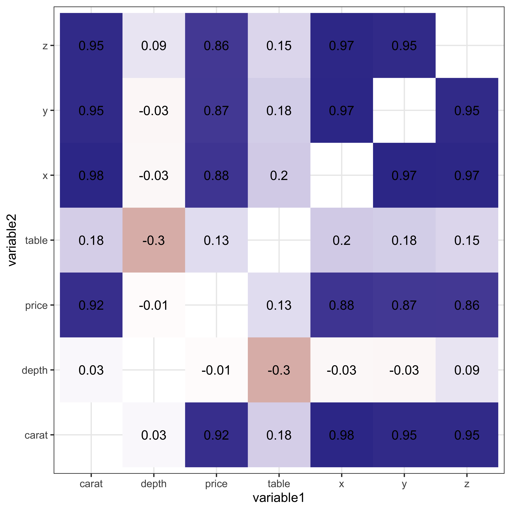
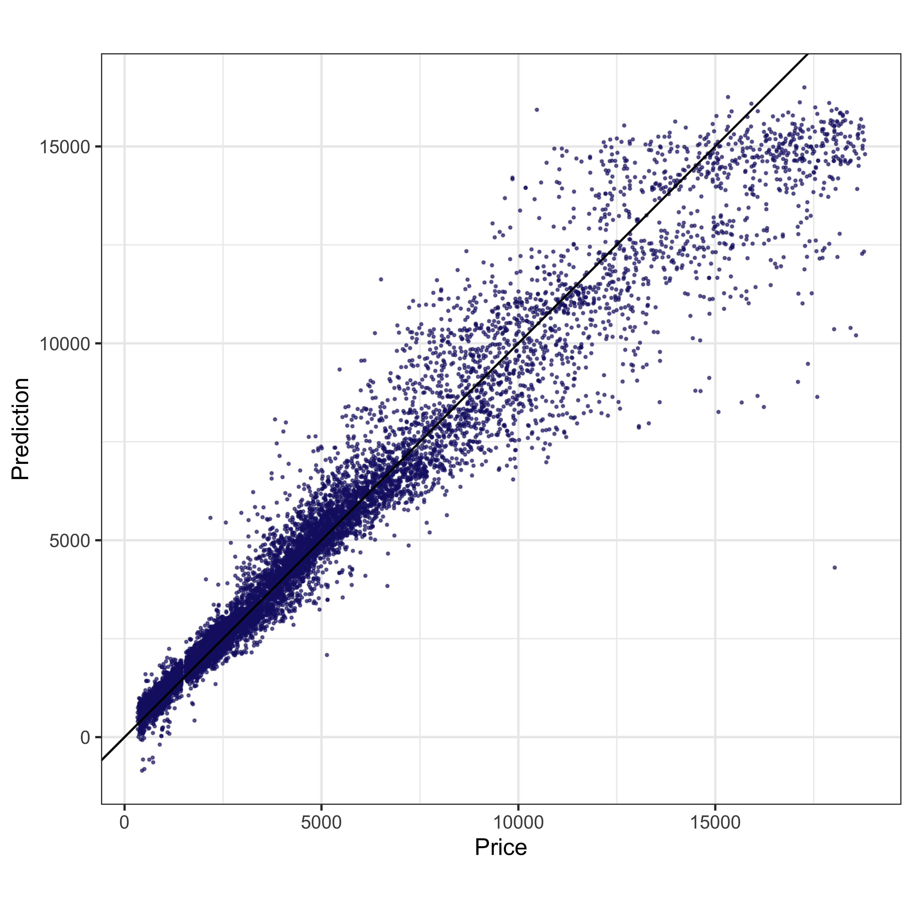
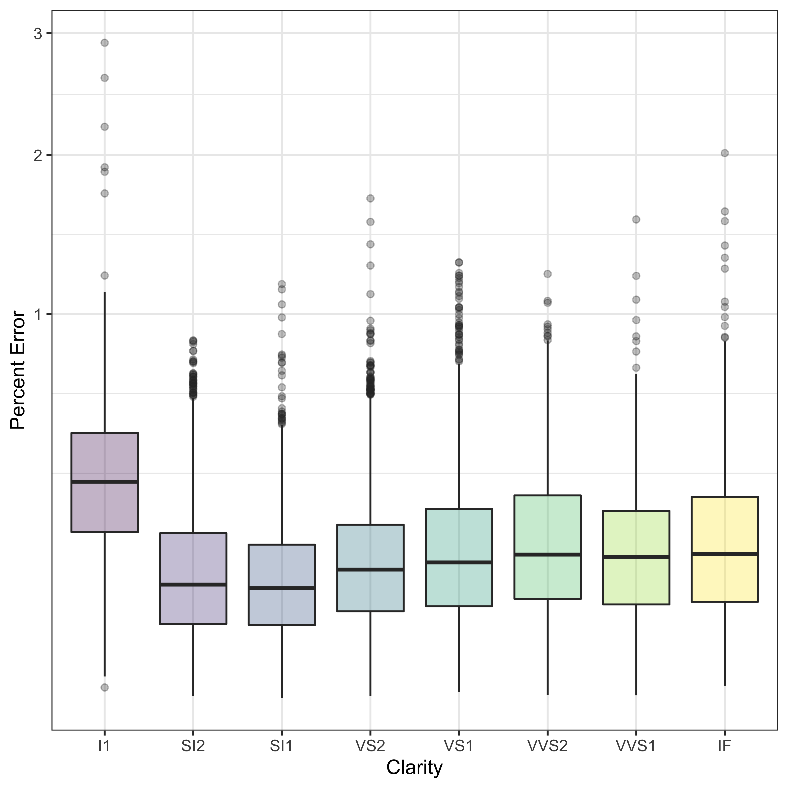

The goal of this post is to set the ground of a tidymodels workflow. We will define the model, the preprocessing recipe, tune the model paramenters, and evaluate our predictions.we will use the diamonds dataset that comes with ggplot2. We will predict diamonds price based on their cut, colour, clarity & other attributes and it also covers the building a simple linear regression model using tidymodels.
head(diamonds)## # A tibble: 6 x 10
## carat cut color clarity depth table price x y z
## <dbl> <ord> <ord> <ord> <dbl> <dbl> <int> <dbl> <dbl> <dbl>
## 1 0.23 Ideal E SI2 61.5 55 326 3.95 3.98 2.43
## 2 0.21 Premium E SI1 59.8 61 326 3.89 3.84 2.31
## 3 0.23 Good E VS1 56.9 65 327 4.05 4.07 2.31
## 4 0.290 Premium I VS2 62.4 58 334 4.2 4.23 2.63
## 5 0.31 Good J SI2 63.3 58 335 4.34 4.35 2.75
## 6 0.24 Very Good J VVS2 62.8 57 336 3.94 3.96 2.48The goal of this post is not performing an eda of this dataset, so I will not spend too long exploring the data. I will include a quick glimpse for context.
library(skimr)
skim(diamonds)| Name | diamonds |
| Number of rows | 53940 |
| Number of columns | 10 |
| _______________________ | |
| Column type frequency: | |
| factor | 3 |
| numeric | 7 |
| ________________________ | |
| Group variables | None |
Variable type: factor
| skim_variable | n_missing | complete_rate | ordered | n_unique | top_counts |
|---|---|---|---|---|---|
| cut | 0 | 1 | TRUE | 5 | Ide: 21551, Pre: 13791, Ver: 12082, Goo: 4906 |
| color | 0 | 1 | TRUE | 7 | G: 11292, E: 9797, F: 9542, H: 8304 |
| clarity | 0 | 1 | TRUE | 8 | SI1: 13065, VS2: 12258, SI2: 9194, VS1: 8171 |
Variable type: numeric
| skim_variable | n_missing | complete_rate | mean | sd | p0 | p25 | p50 | p75 | p100 | hist |
|---|---|---|---|---|---|---|---|---|---|---|
| carat | 0 | 1 | 0.80 | 0.47 | 0.2 | 0.40 | 0.70 | 1.04 | 5.01 | ▇▂▁▁▁ |
| depth | 0 | 1 | 61.75 | 1.43 | 43.0 | 61.00 | 61.80 | 62.50 | 79.00 | ▁▁▇▁▁ |
| table | 0 | 1 | 57.46 | 2.23 | 43.0 | 56.00 | 57.00 | 59.00 | 95.00 | ▁▇▁▁▁ |
| price | 0 | 1 | 3932.80 | 3989.44 | 326.0 | 950.00 | 2401.00 | 5324.25 | 18823.00 | ▇▂▁▁▁ |
| x | 0 | 1 | 5.73 | 1.12 | 0.0 | 4.71 | 5.70 | 6.54 | 10.74 | ▁▁▇▃▁ |
| y | 0 | 1 | 5.73 | 1.14 | 0.0 | 4.72 | 5.71 | 6.54 | 58.90 | ▇▁▁▁▁ |
| z | 0 | 1 | 3.54 | 0.71 | 0.0 | 2.91 | 3.53 | 4.04 | 31.80 | ▇▁▁▁▁ |
Anyone who has seen any heist movies knows that carat and price are highly correlated. A carat is the unit of weight for precious stones and pearls, now equivalent to 200 milligrams.
We will also check for correlation with other features.
diamonds %>%
select_if(is.numeric) %>%
cor() %>%
as_tibble(rownames = "variable1") %>%
pivot_longer(
cols = -variable1,
names_to = "variable2"
) %>%
filter(variable1 != variable2) %>%
ggplot(aes(variable1, variable2, label = round(value, 2), fill = value)) +
geom_raster() +
geom_text() +
scale_fill_gradient2()
The data is mostly clean, but I believe it will need some basic preprocessing.
library(tidymodels)
set.seed(2345)
split <- initial_split(data = diamonds, strata = price)
train <- training(split)
test <- testing(split)set.seed(123)
k_fold <- vfold_cv(data = train, v = 5, strata = price)We don’t need much transformation in the diamonds dataset but we do need to transform our nominal (factors) predictors into dummy variables.
library(themis)
xgb_recipe <- recipe(price ~ ., data = train) %>%
step_dummy(all_nominal())There are a fair amount of parameters in a boosted tree. You can look at the general boosted tree parameters to learn more about what they do.For now, we will focus on how to optimize the value of these parameters using the function tune().
xgb_specs <- boost_tree(
trees = 1000,
tree_depth = tune(),
min_n = tune(),
loss_reduction = tune(),
sample_size = tune(),
mtry = tune(),
learn_rate = tune()
) %>%
set_engine("xgboost") %>%
set_mode("regression")Now that the parameters are set to tune(). We need to construct a grid with parameter values that they algorithm will try and evaluate what combination is the best. I like to use grid_max_entropy() because it supposed to give a good coverage. You can learn more about the different grid construction methods in the dials package documentation.
xgb_grid <- grid_max_entropy(
tree_depth(),
min_n(),
loss_reduction(),
sample_prop(),
finalize(mtry(), train),
learn_rate(),
size = 10
)xgb_wf <- workflow() %>%
add_model(xgb_specs) %>%
add_recipe(xgb_recipe)The next step is using our grid and resamples to tune the parameters through cross validation. To save building time, I ran the tuning locally and saved the results.
# doParallel::registerDoParallel()
#
# set.seed(896)
# tuning <- tune_grid(
# xgb_wf,
# resamples = k_fold,
# grid = xgb_grid,
# metrics = metric_set(rmse,mae,mape),
# control = control_grid(verbose = TRUE)
#
# )
#
# save(tuning, file = "~/Documents/GitHub/personal_website/content/blog/simple-tidymodels-workflow/tuning.Rdata")
load("~/Documents/GitHub/personal_website/content/blog/simple-tidymodels-workflow/tuning.Rdata")
tuning## # Tuning results
## # 5-fold cross-validation using stratification
## # A tibble: 5 x 4
## splits id .metrics .notes
## <list> <chr> <list> <list>
## 1 <split [32.4K/8.1K]> Fold1 <tibble [30 × 10]> <tibble [0 × 1]>
## 2 <split [32.4K/8.1K]> Fold2 <tibble [30 × 10]> <tibble [0 × 1]>
## 3 <split [32.4K/8.1K]> Fold3 <tibble [30 × 10]> <tibble [0 × 1]>
## 4 <split [32.4K/8.1K]> Fold4 <tibble [30 × 10]> <tibble [0 × 1]>
## 5 <split [32.4K/8.1K]> Fold5 <tibble [30 × 10]> <tibble [0 × 1]>The metric_set() function sets the chosen metrics to use in the selection process. Something to notice is that in classification problems you may need to tell the function what event should be considered as the “success” in metric_set(..., event_level = "second"), for example.
show_best(tuning, metric = "mape")## # A tibble: 5 x 12
## mtry min_n tree_depth learn_rate loss_reduction sample_size .metric
## <int> <int> <int> <dbl> <dbl> <dbl> <chr>
## 1 3 37 4 0.00828 0.000000445 0.469 mape
## 2 8 6 8 0.000674 0.0585 0.571 mape
## 3 3 13 3 0.000569 10.6 0.461 mape
## 4 2 34 9 0.000541 0.0000954 0.100 mape
## 5 2 20 15 0.0000125 11.4 0.256 mape
## # … with 5 more variables: .estimator <chr>, mean <dbl>, n <int>,
## # std_err <dbl>, .config <chr>best_params <- select_best(tuning, metric = "mape")xgb_final_wf <- xgb_wf %>%
finalize_workflow(best_params)xgb_final_fit <- last_fit(xgb_final_wf,
split = split,
metrics = metric_set(rmse, mae, mape)
)
collect_metrics(xgb_final_fit)## # A tibble: 3 x 4
## .metric .estimator .estimate .config
## <chr> <chr> <dbl> <chr>
## 1 rmse standard 867. Preprocessor1_Model1
## 2 mae standard 472. Preprocessor1_Model1
## 3 mape standard 15.8 Preprocessor1_Model1It seems we didn’t overfit our model.
pred <- collect_predictions(xgb_final_fit)
pred %>%
ggplot(aes(price, .pred)) +
geom_point(size = 0.3, color = "midnightblue", alpha = 0.6) +
geom_abline(slope = 1) +
coord_fixed() +
labs(x = "Price", y = "Prediction")
Our model does worse with expensive diamonds. It would be worth it to remove outliers before training. Let’s look at clarity and how the model perform in the different clarity categories.
pred %>%
bind_cols(test %>% select(-price)) %>%
mutate(perror = abs(.pred - price) / price) %>%
ggplot(aes(clarity, perror, fill = clarity)) +
geom_boxplot(alpha = 0.3) +
scale_y_sqrt() +
labs(x = "Clarity", y = "Percent Error")
Our model struggles with I1 clarity but besides this, I think this was a good attempt on applying the tidymodels approach.